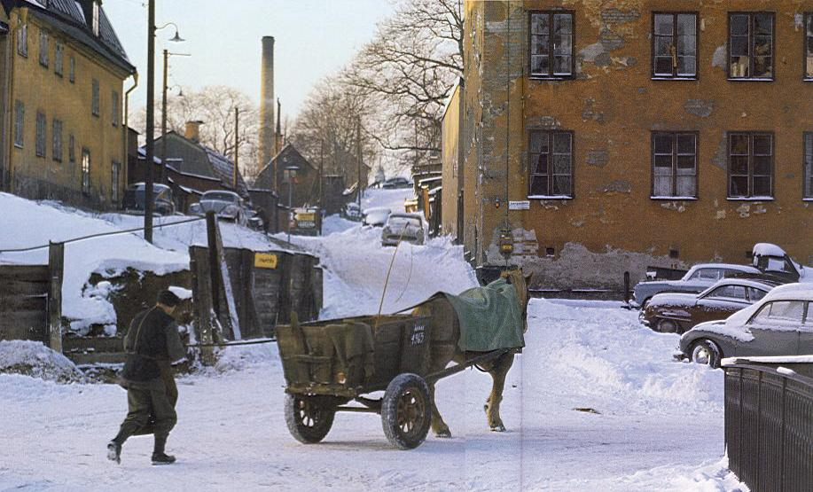

|
ETT NYTT SÖDER med breda, raka gator kantade av höga stenhus växte fram i slutet av 1800-talet. Det
huvudstråk som tidigare sträckte sig genom Brännkyrkagatan försköts nedåt Hornsgatan. Kvarteren upp mot
Skinnarviksbergen blev en bortglömd del av staden som med tiden inte fick det allra bästa rykte.
Här luktade finkel, knivarna satt ganska löst och utefter planken i grändernas dunkel strök kvarterens skökor - berglärkorna - på spaning efter kunder. Men i de små enkla kåkarna bodde i sanningens namn också hyggligt folk som inte hade någon skuld i att området blivit en avkrok. På 1950-talet hade visserligen lugnet återvänt kring Skinnarviksberget, men det var en illa medfaren idyll som låg där och tryckte mellan äppelträd och blomstertäppor. Fotografen Tore Abrahamsson har här lyckats fånga upp den gammaldags stämning som så länge dröjde sig kvar i dessa kvarter. En av de byggnader som försvunnit är det så kallade Typografhotellet till höger i bild. Det slätputsade gula bostadshuset i hörnet av Gamla Lundagatan och Ludvigsbergsgatan uppfördes 1853 av köpmannen och industriidkaren Anton Wilhelm Frestadius. Vid inspelningen 1960 av Lars-Magnus Lindgrens succéroman "Änglar, finns dom" fick huset stå som objekt för omfattande spekulationsaffärer med Toivo Pawlo i rollen som den koleriske hyresgästen Bergerus en trappa upp. På gatan framför Typografhotellet ses här en av Stockholms sista häståkare väl påpälsad i den bitande kylan. Lägg märke till registreringsnumret på vagnen - n:r 1965 - som förr skilde ut seriösa åkare från de illa sedda "bönhasarna" - frifräsare som inkräktade på åkarnas lovliga yrke. I juni 1901 hade man börjat köra ut varor från sockerbruket i Tanto med en motordriven varubil men det skulle dröja ännu många år innan denna företeelse sågs som en verklig konkurrent till hästen. År 1911 omfattade häståkerinäringen i Stockholm 2736 hästar med lika många fordon och inte förrän i början av 1960-talet pensionerades den sista åkarhästen. Stockholm - staden som försvann 2, Sjöbrandt-Sylvén, NoK 2002 |